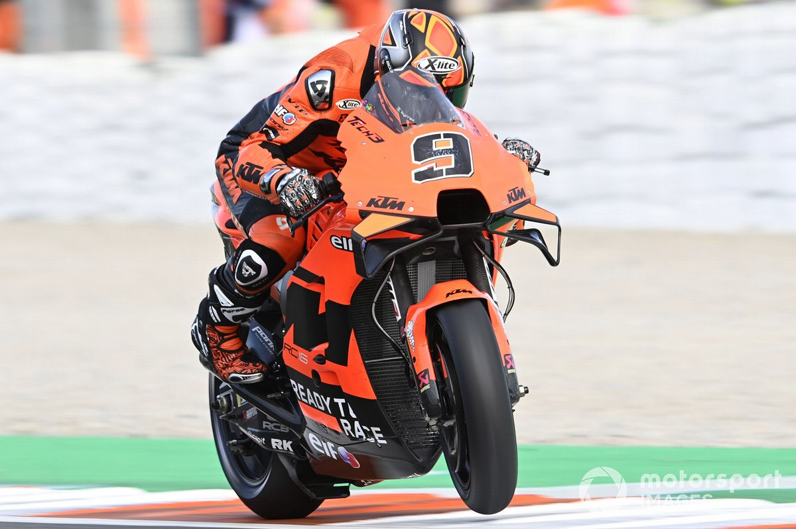

By: Lewis Duncan Nov 30, 2021, 10:30 PM
Petrucci will make a unique career switch in 2022 after bringing his MotoGP tenure to an end earlier this month at the Valencia finale having lost his Tech 3 KTM ride for next year.
The Italian will remain with KTM and Tech 3 in 2022 but will contend the famous Dakar Rally, which has been a dream of his for some time.
Petrucci completed some desert running in Dubai ahead of the final MotoGP rounds of 2021 and has continued his preparations following the conclusion of the season.
Speaking ahead of the Valencia finale, Petrucci says everything about his switch to rallying has been a huge adjustment – while noting he is yet to determine what the rest of his 2022 season will look like.
“The biggest thing to learn in the Dakar is everything because it’s completely another world,” Petrucci said.
“I think already in one week of training I did more than the distance that I did all this year with a MotoGP bike.
“So, I’m completely new and fortunately I have some quite good skills for riding.
“But then the navigation is really, really something you need to understand because here [in MotoGP] we talk about metres and millimetres on the bike.
“There you talk about kilometres, and you never know what’s going on.
“For this reason, I will do this Dakar, then we will sit down a bit with KTM and will decide what the plan is for the year after, if I enjoy to do these kinds of races or try to do something different.
“But at the moment I’m quite busy doing that because I need a lot of time to recover and especially, to understand how the race can be.”
Dakar organisers confirmed the details of the 2022 rally last weekend, which will be staged in Saudi Arabia and take place for two weeks from January 1 through to 14 January 14.
The 2022 Dakar will count towards the new FIA World Cross-Country Rally Championships, while the event will also form part of the equivalent FIM rally series.
Head office: 8A Ton That Thuyet, Cau Giay district, Ha Noi
Phone: 084556677